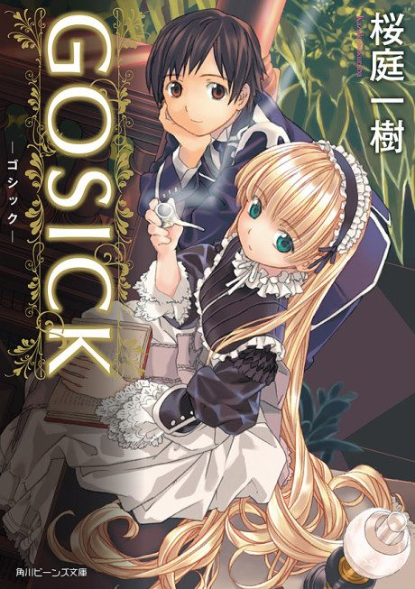

Anime
Anime
Light novel2011 · Drama, Mystery, Romance
Gosick
GOSICK
AniList7.7
Animeter—
Episodes24 ep
SourceUnclear
Anime finished. Where does the story go next?
StatusNo source yet
We looked for where the anime ends in the light novel but found no source we trust yet. The light novel is 9 volumes, finished.